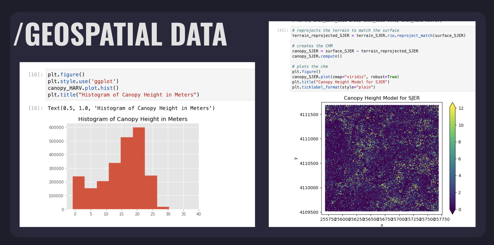
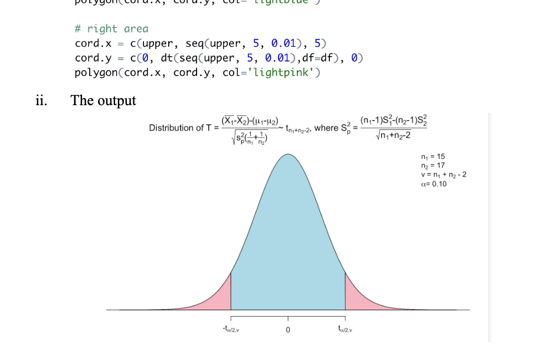

Along with web development, I was also interested in learning data analysis. I learn how to work with data using R in my classes for my statistics minor, but I wanted to explore using Python and Jupyter Lab.
When looking through the research labs at the University of Florida, the Jain Lab caught my eye. The Jain Lab is interested in working with geospatial data and they referred me resources where I could learn more about geospatial data and work through exercises.
Although my project was cut short due to my study-abroad internship in Singapore, I learned a lot about GIS (Geographic Information Systems), how to manipulate data, how to interpret data, and how geospatial data differs from other types of data.
My geospatial data work greatly helped me prepare for my coursework in R, where I was able to use the time that would otherwise be spent learning the basics of R on instead getting a better insight on the data I was working with. Although not technically a part of my geospatial project, if you are interested in learning more about my work in R you can click the button below to see my final project report for my Programming With Data In R course.
